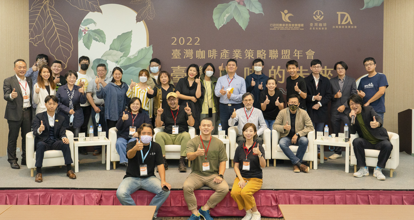
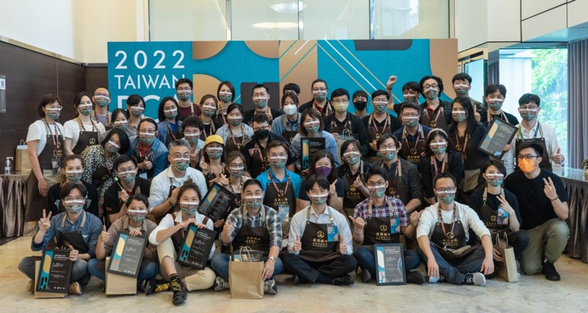

台灣咖啡產業策略聯盟年會（圖／農糧署）

第2屆典藏臺灣精品咖啡國際競標(2022 Taiwan PCA)（圖／農糧署）
111年Taiwan PCA競標吸引15 個國家，超過50個買家團體參與競標，共有5件咖啡成交單價飆破每磅100美元，10個得獎批次被國際買家標下，總成交金額高達新台幣 278萬 ($93,594.51) ，外銷生豆重量達 350 kg，皆創下臺灣咖啡的新紀錄。
透過近年的行銷活動曝光，國人對於國產咖啡接受度日益上升，麥當勞、City Café等知名通路都有上架販售，初估至少20公噸。
透過近年的行銷活動曝光，國人對於國產咖啡接受度日益上升，麥當勞、City Café等知名通路都有上架販售，初估至少20公噸。
1.辦理咖啡生產處理教學課程3場次。
2.輔導農友取得咖啡品質鑑定師資格以及資格維持6人。
3.輔導臺灣咖啡取得國際品質認證50件。
4.國際咖啡品質學會在台灣辦理講師訓練課程 2場次。
5.辦理聯盟成立大會 1 場次。
6.辦理聯盟年會 1 場次。
7.協助辦理輔導咖啡評鑑、媒合與行銷2場次。
8.辦理2022 典藏台灣精品咖啡國際競標賽事1式。
9.辦理北臺灣精品咖啡評鑑1式。
10.辦理環太平洋咖啡高峰會1式。
11.臺灣國際咖啡展 攤位成果展示 1式。
12.辦理台灣精品咖啡休閒產業與食農教育活動2場次。